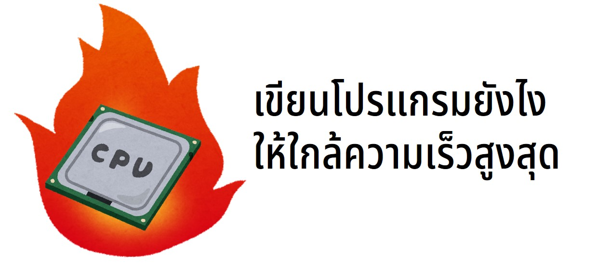

**โค้ดแบบไหนเค้นประสิทธิภาพซีพียูได้สูงสุด**

มุ่งสู่ความเร็วสูงสุด
===
ซีพียูปัจจุบันเพียงแค่คอร์เดียวก็สามารถคำนวนเลขได้วินาทีละหลาย
แต่ถ้าคุณไม่เข้าใจว่าแรงสุดของซีพียูคุณมันหน้าตายังไง
คุณจะรู้ได้ไงว่าควรหยุด optimize ตอนไหน
ซีพียูเราเป็นเหมือนรถ
โปรแกรมแต่ละแบบที่เราเขียนก็เหมือนสนามแข่งหลายๆแบบ
ถ้าเราอยากเข้าใกล้ความเร็วสูงสุด
เราต้องการสนามที่เป็นทางตรงซะส่วนใหญ่ เข้าโค้งแค่นิดหน่อยเท่านั้น
โค้ดที่ผมเลือกมาในรอบนี้คือ dot product
เพราะ dot product ก็แค่เอาตัวเลขสองอาร์เรย์มาคูณกันแล้วหาผลรวมเท่านั้น
~~~c++
float dot_product_simple(float * array_a, float * array_b, int num_values)
{
float result = 0.0f;
for (int i = 0; i < num_values; i++)
{
result += array_a[i] * array_b[i];
}
return result;
}
~~~
!!!
#บ่น
ประมาณ 10 ปีก่อน ผมเคยเป็นหนึ่งในพวกที่ชอบพูดว่า "เลาตัองอ๊อบติมั้ยส์"
แล้วก็ไปนั่งแก้จาก switch-case เป็น if-else แล้วก็ไปเคลมว่าโปรแกรมน่าจะเร็วขึ้นบ้างแล้ว
(เผื่อคนไม่รู้นะครับ ถ้า if-else มันไม่เยอะ compiler สร้างโค้ดหน้าตาออกมาเหมือนกัน)
วัดความเร็ว
===
ก่อนจะไปต่อเราต้องคุยกันก่อนว่าความเร็ววัดยังไง
เวลา Intel หรือ AMD จะขายซีพียูจะมีตัวเลขออกมาบอกเราเสมอว่า
สามารถคำนวนเลขทศนิยมได้กี่ล้านตัว
ทบทวน SIMD ความเดิมจากตอนที่แล้ว
===
!!!
#บ่น
ในชื่อ `_mm_add_ps` จะมี `mm` กับ `ps`
`ps` ย่อมาจาก Packed Single (precision) หมายถึงใช้กับ float ที่มีความแม่น 32 bit
ถ้าคุณเปลี่ยนเป็น `pd` หรือคือ Packed Double (precision) คุณก็จะได้ฟังก์ชั่นที่เอาไว้ใช้กับ double ความแม่น 64 bit แทน
`mm` น่าจะมาจาก MMX [ซึ่งก็ไม่มีใครสรุปว่ามันย่อมาจากอะไร]("https://en.wikipedia.org/wiki/MMX_(instruction_set)#:~:text=MMX%20is%20officially%20a%20meaningless,Matrix%20Math%20eXtension")
เพราะ Intel ทะเลาะกับ AMD ซี้ซั้วจนสุดท้ายก็งอนกันแล้วก็ประกาศว่ามันย่อกันคนละแบบ
บรรดาโปรแกรมเมอร์ทั้งหลายก็เลยแบบ เออ เรียก mm ก็ mm วะ
ถ้าคุณรู้โปรแกรมคุณ คุณรู้ SIMD (ซิมดี) ออพติไมซ์โปรแกรมร้อยครั้งก็ย่อมสำเร็จบ้าง
เขียนเพิ่มทำไม
===
ตอนแรกไม่อยากเขียนเกี่ยวกับ SIMD เพิ่ม
แต่สังเกตว่าคนที่อ่านส่วนใหญ่ก็ใช้ SIMD กันนิดหน่อยอยู่แล้ว
เลยตั้งใจเขียนเพิ่มเพื่อให้คนที่ใช้อยู่แล้วแต่ไม่เข้าใจว่าทำไม SIMD เดี๋ยวเร็วเดี๋ยวช้าจะได้เข้าใจไปเลย
แต่สำคัญที่สุดคือ คนเขียนคึกก็เลยเขียนต่อ
บทความนี้เลยจะออกวิชาการหน่อยๆและอาจจะไม่มีเรื่องราวเหมือนบทความที่แล้ว
อย่างไรก็ตามการออกมาบ่นว่าควรจะใช้ SIMD โง้นงี้งั้นมันอาจจะไม่ค่อยเห็นภาพเท่าไหร่
บทความนี้เราจะมาออพติไมซ์ฟังก์ชั่น dot product กันแทน
เหตุผลที่เลือก dot product เพราะฟังก์ชั่นสั้น ทำให้สามารถอธิบายได้ง่าย
~~~c++
float dot_product_simple(const float * array_a,
const float * array_b,
const int num_values)
{
float result = 0.0f;
for (int i = 0; i < num_values; i++)
{
result += array_a[i] * array_b[i];
}
return result;
}
~~~
dot product จริงๆแล้วสามารถเขียนให้อยู่ในรูปผลรวมของ dot product ย่อย
~~~c++
float dot_product_sum_of_dot_products(const __m128* array_a,
const __m128* array_b,
const int num_values)
{
float result = 0.0f;
for (int i = 0; i < num_values / 4; i++)
{
// dp_ps ย่อมาจาก dot product packed single (precision)
__m128 p = _mm_dp_ps(array_a[i], array_b[i], 0xF1);
result += p.m128_f32[0];
}
return result;
}
~~~
SIMD เราไม่เท่ากัน
===
โค้ดของคุณเมื่อถูก build ก็จะกลายเป็นคำสั่ง (instruction) หลายๆคำสั่งต่อกัน
ถ้าคุณเอาเลขมาบวกกันสองตัวก็นับเป็นหนึ่งคำสั่ง
ถ้าคุณเอาเลขสองตัวมาเทียบกันก็นับเป็นอีกหนึ่งคำสั่ง
แต่สิ่งสำคัญที่คุณควรจะรู้คือ แต่ละคำสั่งใช้เวลาไม่เท่ากัน
เช่น บน Xbox หรือ PS5 ที่ใช้ CPU AMD Zen 2 กว่าคุณจะได้ผลลัพธ์การหารเลขทศนิยม คุณต้องรอนานกว่าผลลัพธ์การคูณถึงสี่เท่า
~~~c++
float dot_product_fmadd(const __m128* array_a,
const __m128* array_b,
const int num_values)
{
__m128 result4 = _mm_setzero_ps();
for (int i = 0; i < num_values / 4; i++)
{
result4 = _mm_fmadd_ps(array_a[i], array_b[i], result4);
}
return result4.m128_f32[0] + result4.m128_f32[1] + result4.m128_f32[2] + result4.m128_f32[3];
}
~~~
Data dependency
===
~~~c++
float dot_product_fmadd4(const __m128* array_a,
const __m128* array_b,
const int num_values)
{
__m128 result4[4];
result4[0] = _mm_setzero_ps();
result4[1] = _mm_setzero_ps();
result4[2] = _mm_setzero_ps();
result4[3] = _mm_setzero_ps();
for (int i = 0; i < num_values / 4; i+=4)
{
result4[0] = _mm_fmadd_ps(array_a[i], array_b[i], result4[0]);
result4[1] = _mm_fmadd_ps(array_a[i + 1], array_b[i + 1], result4[1]);
result4[2] = _mm_fmadd_ps(array_a[i + 2], array_b[i + 2], result4[2]);
result4[3] = _mm_fmadd_ps(array_a[i + 3], array_b[i + 3], result4[3]);
}
float result = 0.0f;
for (int i = 0; i < 4; i++)
{
for (int j = 0; j < 4; j++)
{
result += result4[i].m128_f32[j];
}
}
return result;
}
~~~
~~~c++
float dot_product_simple(const float * array_a,
const float * array_b,
const int num_values)
{
float result = 0.0f;
for (int i = 0; i < num_values; i++)
{
result += array_a[i] * array_b[i];
}
return result;
}
~~~
!!!
#บ่น
โค้ด production ที่ต้องถูก optimize ส่วนใหญ่ที่ผมเคยก็จะหน้าตาประมาณด้านบน
คือมันจะดูไม่ค่อยเป็นภาษาคนอีกต่อไป
คุณต้องคอมเมนต์เยอะๆ
ทำยังไงถึงไม่เห็น SIMD น่าเกลียด
===
!!!
#บ่น
จริงๆแล้ว ในเคสโปรแกรมสั้นๆง่ายๆแบบ dot product ตัว C++ Compiler เช่น Clang สามารถจับ pattern แล้ว optimize แล้วทำ SIMD ให้เราได้เลยด้วยฟีเจอร์ที่ชื่อว่า autovectorization
ผมเลยเปลี่ยนไปใช้ Visual C++ Compiler แทน เพราะมันไม่ทำอะไรให้เลย
ถ้าใครยังใช้ Visual C++ Compiler เปลี่ยนซะนะครับ
สมมติถ้าเรามี dot product
ในฐานะ influencer SIMD ผมก็จะขอทิ้งท้ายไว้ว่า ""
https://www.agner.org/optimize/instruction_tables.pdf